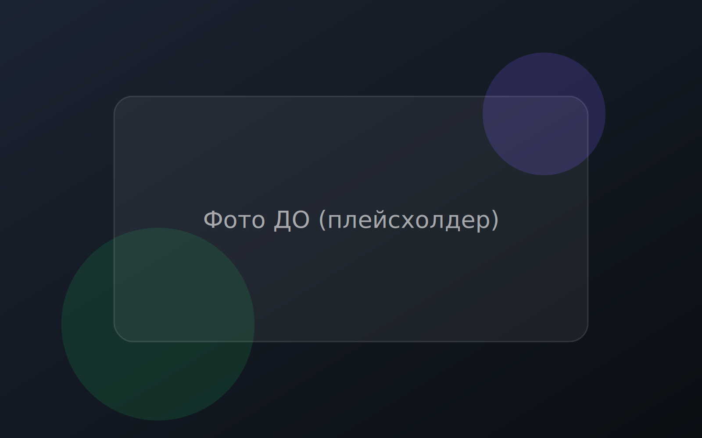
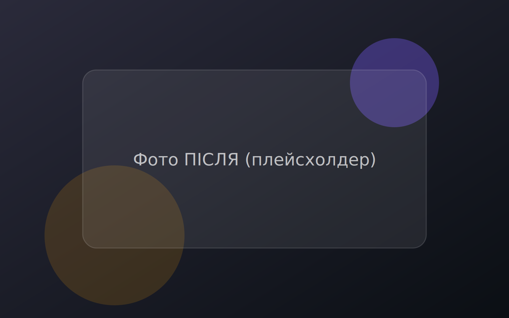

Демо: порівняння “До/Після” + перемикання пресетів
Нижче — ключовий UI-компонент: Image Comparison Slider та базова імітація пресетів у реальному часі. Нижче — ключовий UI-компонент: Image Comparison Slider та базова імітація пресетів у реальному часі.
Завантаж свої фото
На GitHub Pages немає сервера, тому фото не “зберігаються” на сайті — вони обробляються локально у твоєму браузері. Вибери файл, і він одразу зʼявиться у блоці “До/Після”.
Підтримуються JPG/PNG/WebP.
Якщо не вибирати — “ПІСЛЯ” буде те саме фото + пресет.


UX-обґрунтування
- Slider дозволяє чесно оцінити пресет без “підміни” прикладів.
- Перемикач пресетів дає швидке порівняння стилів на одному кадрі.
- CTA “Купити” поряд з демо → короткий шлях до покупки.
- Клавіатура: ←/→ рухає повзунок, Home/End — крайні значення.
Технічна частина:
js/slider.js (slider) + js/app.js (пресети).